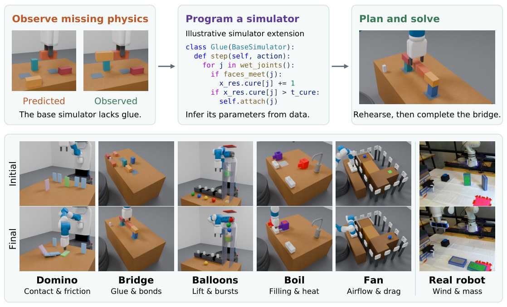
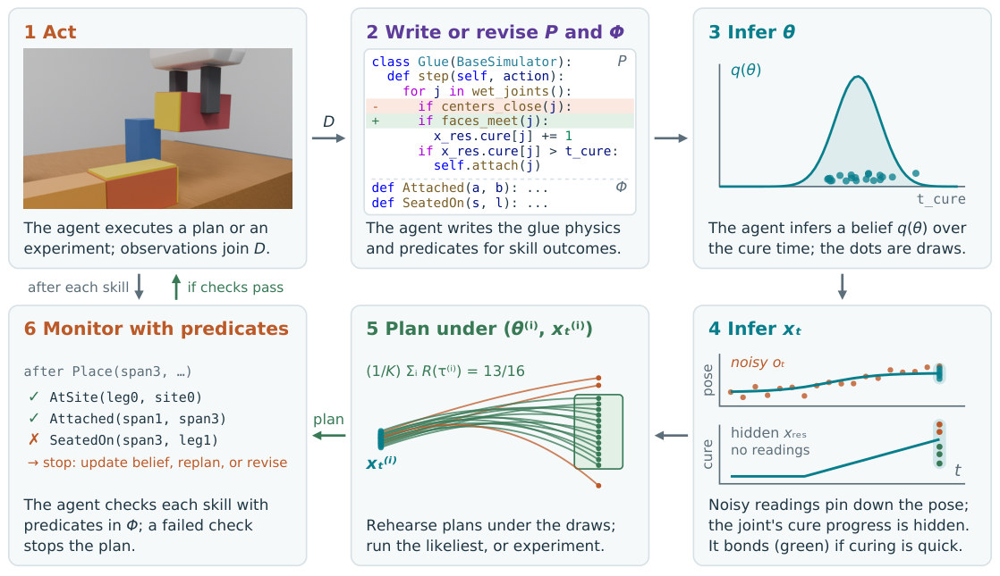
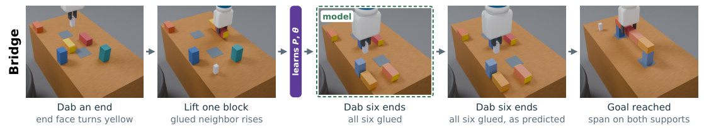
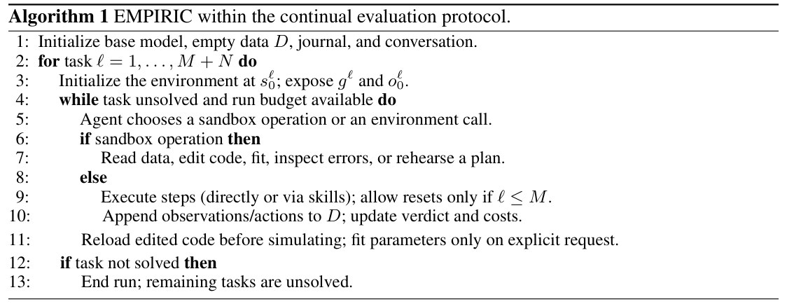
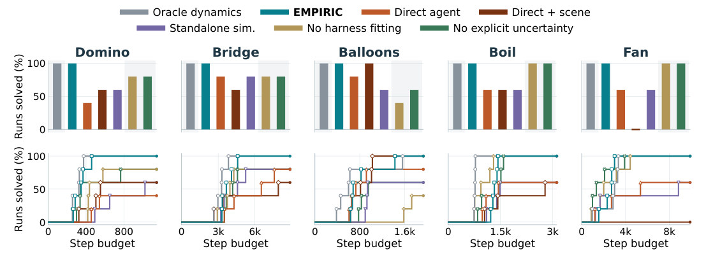
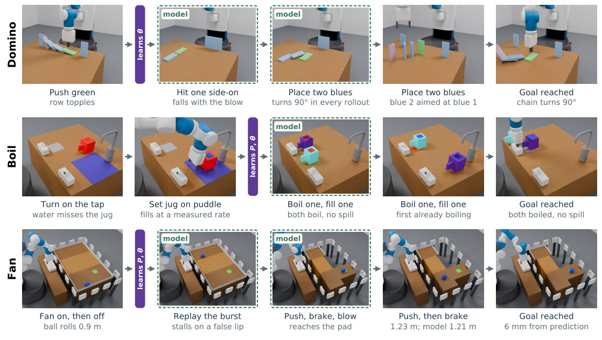
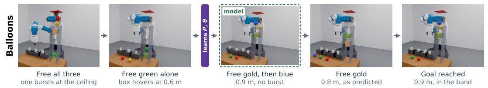
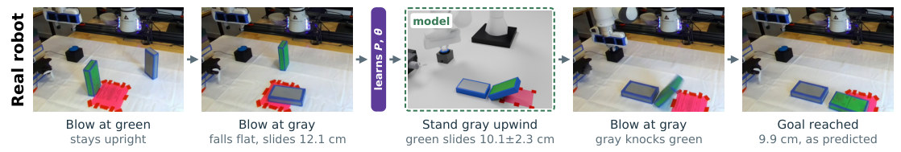
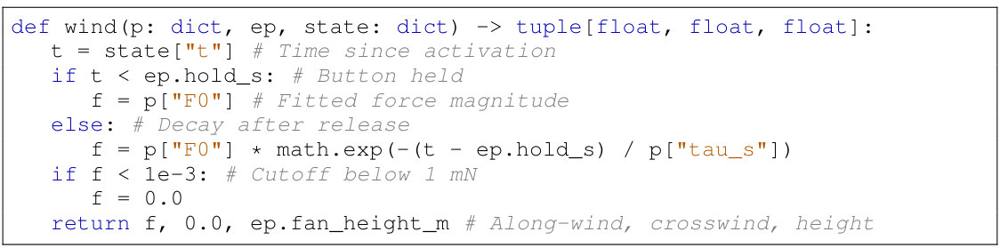
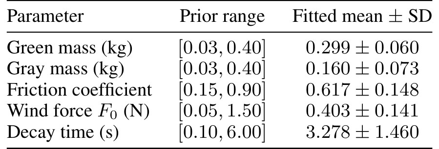

Agent-centric-real-to-sim · 归档于 2026-11-16
EMPIRIC
EMPIRIC: Experiment-Driven Learning of Residual World Models for Robot Planning
摘要里的 yichao-liang.github.io/empiric 会跳转到 basisresearch.github.io/empiric。项目页的 Code 按钮指向 BasisResearch/predicators，代码在 predicators/code_sim_learning/（论文附录 D 的 prompt 里的包名就是它）。
归档到 Agent-centric real-to-sim：场景几何给定时，agent 用几次真实实验把引擎缺的机制（胶水、风、加热）写成 simulator 代码并推出参数，真机上从两阵风推出风力和两块 domino 的质量。它也贴近 Robotic harness（coding agent 加 sandbox 工具）。
TL;DR
- Problem
- 物理引擎会算刚体运动和接触，却缺整类机制（胶水固化、注水加热、风）。只重建几何的 real-to-sim 补不上这些机制，它们的参数和隐藏状态又只能从几次带噪交互里推出来。
- Idea
- Residual world model：coding agent 给 base simulator 写一个 Python subclass，补上新的力、约束和 hidden state。参数用回放误差构成的 generalized posterior 表示成 belief。agent 在 K 个 belief draw 上排练 plan，按 predicate 读数的互信息挑实验；执行时预期的 predicate 不成立，就停下来改 plan、belief 或程序。
- Result
- 仿真（5 个 PyBullet domain，每个 agent 5 seeds）：25/25 个 run 全解，Direct agent 16、Direct + scene 14、Standalone sim. 16（Fig. 3），和拿到真动力学的 Oracle 持平。真机（1 次 run，没有 baseline）：两阵风之后推出风力 F0 0.403 ± 0.141 N 和两块 domino 的质量（Table 2）；预测 green 滑 10.1 ± 2.3 cm，实测 9.9 cm，落进 patch。
Problem
引擎缺的机制，重建几何补不上；没有能推断的模型，agent 只能拿真实 step 去试
Running example · 后面每个 stage 都跟着它走
Bridge（论文的 Fig. 1、Fig. 2、Fig. 4 顶行都用它）：桌上有 leg0、leg1、span0–span2 五块积木、一个胶水瓶 bottle 和两个落脚点 site0、site1。观测是带噪的物体特征（位置 σ 5 mm，朝向 σ 0.02 rad，Table 1）加 900 × 900 渲染图。base simulator 有几何、刚体物理和机器人 skill，但胶水机制是关掉的；哪两块已经粘牢、固化到哪一步都看不见。
→ 想要：训练 task 把 3 块 span 端对端粘成一根刚性横梁，架在两条腿上成 n 形桥；测试 task 换成 4 块 span，而且不许 reset；整个 run 共用 20,000 个 env step。
flowchart LR IN["Bridge 输入
5 块积木，引擎无胶水"]:::example IN --> A1["几何 twin
重建积木，引擎不变"] A1 --> AX["抬一块：sim 说邻块不动
实际邻块一起起来"]:::gap IN --> B1["Direct agent
没有 simulator，边看边做"] B1 --> BX["4 块 span 只能硬试
Bridge 4/5 · 总 16/25"]:::gap IN --> C1["Direct + scene
拿到场景和引擎代码"] C1 --> CX["给的引擎模拟不出粘连
Bridge 3/5 · 总 14/25"]:::gap IN --> D1["Standalone sim.
从零写 skill 转移模型"] D1 --> DX["接触、重力也得自己写
Bridge 4/5 · 总 16/25"]:::gap
四条"坏在哪"都是推断。论文只报每个 domain 解出的 run 数：Bridge 的 4/5、3/5、4/5 读自 Fig. 3 的柱高，与 §4.1 的总数 16、14、16（共 25）一致。失败原因只分析了 Domino（把直线 cascade 外推到转弯）和 Fan（低估开风扇的延迟，球先滚下平台）。几何 twin 一行是 §1 的论点和 Fig. 1 左上的示意图（Predicted 对 Observed），论文没有跑这类方法。七个 agent 都用同一个 LLM（Claude Opus 5，high effort）和同一套 skill library，差别只在给了什么建模支持。
根本问题：引擎知道刚体怎么动，却不知道这个场景多了什么机制、参数多大、隐藏状态走到了哪一步。这三样不进一个能预测的模型，agent 只能拿真实 step 去试，到了不能 reset 的测试 task 就只能外推。 这篇的切入点：保留引擎，让 coding agent 只写缺的机制（subclass 里的力、约束、hidden state）；参数和状态用 belief 表示；先在 belief 的多个 draw 上排练、挑最有信息量的实验，执行时一旦预测落空就修正。
Related work
| 相关工作 | 解决什么 | 怎么解决 | 和本文的区别 |
|---|---|---|---|
| 同一问题 · 别的解法 | |||
| Coding agent 直接解任务 CaP-X M2 → 本文 Direct agent；SimFoundry → Direct + scene；ASPIRE、ENPIRE、AgenticGenPlan | 用 LLM 写程序完成机器人操作任务 | 看观测和执行反馈写、改动作程序；可拿场景资产或做 simulator probe | 改的是动作程序，不维护带参数 belief 的 forward model → EMPIRIC 同时改 simulator、推参数、在 belief 上排练 skill |
| Code world models（本文所属） WorldCoder → 本文 Standalone sim.；TheoryCoder、GIF-MCTS、PoE-World、Code World Models、POMDP Coder、Pinductor、Code as Worlds | 学可执行的转移程序来规划 | LLM 写或搜索程序，有的处理部分可观测；Code as Worlds 把 MuJoCo 接进从文本、视频的重建 | 从零写整套动力学，或一次性从文本、视频重建 → 只写引擎缺的机制，数据来自自己的带噪实验，接触、重力、skill 沿用引擎 |
| Real-to-sim 重建 / digital twin URDFormer、Real2Code；RialTo、Re3Sim、SplatSim；Agentic Real2Sim | 从真实观测造出仿真场景 | 重建几何和铰接，用 twin 训练或迁移 policy；Agentic Real2Sim 把录像对齐成可执行的 episode | 只恢复引擎本来能表示的结构，缺的机制补不上 → 把这样的场景当输入，从新交互里学风、加热这类机制 |
| Hybrid 物理 + 参数推断 Golemo 2018、Ajay 2019、NeuralSim、TossingBot；BayesSim 等 simulation-based inference；ASID、Scalable Real2Sim | 让引擎预测更准，估物理参数 | 学残差修正或补缺的力；在固定模型族里推参数后验；主动挑交互 | 机制（模型族）事先固定，只调参数或学修正 → agent 在任务中改机制程序本身，再推参数和 hidden state |
| 相似做法 · 别的问题 | |||
| 规划用的抽象学习 NSRTs、VisualPredicator、pix2pred、ExoPredicator | 为 task and motion planning 学 operator、predicate、带延迟的过程 | 从数据学符号抽象和局部连续模型 | 停在抽象层 → 补底层机制，skill 的结果由机制加引擎物理算出；predicate 只用来监控和挑实验 |
来源：论文 §5 Related Work、§1 Introduction，以及 §4.1 的 baseline 设定（三个 baseline 分别 "inspired by" CaP-X 的 M2 设定、SimFoundry、WorldCoder）。library 里已有 Agentic Real2Sim、RialTo、Scalable Real2Sim 的页面；论文只在 §5 提到它们，没有数字对比。未另行检索。
Level 1 · Big picture
保留物理引擎，agent 只用代码补上缺的机制，再靠参数 belief 决定先做实验还是直接动手

怎么读这张图
- 上排左 Observe missing physics：Predicted 是 base simulator 的预测：抬起一块，另一块留在桌上。Observed 是实际：粘着的那块一起起来。结论写在下面："The base simulator lacks glue"。这就是例子里的 Lift one block。
- 上排中 Program a simulator：agent 写的
Glue(BaseSimulator).step：每个涂了胶的接头 j，端面贴着（faces_meet）就把cure[j]加 1；超过t_cure就attach(j)，在引擎里加一个约束。cure是 agent 自己记的隐藏状态，t_cure是要从数据推的参数（"Infer its parameters from data"）。 - 上排右 Plan and solve：先在扩展后的 simulator 里排练，再真的把桥搭完（"Rehearse, then complete the bridge"）。
- 下排：Domino（接触和摩擦）、Bridge（胶水和粘结）、Balloons（升力和碰顶爆）、Boil（注水和加热）、Fan（气流和阻力）五个 PyBullet domain；竖线右边是真机（风和质量）。Initial / Final 是成功的测试 episode 的首尾画面。
- Experiment：抬起两块粘着的积木中的一块。
- Learn：出现 agent 写的
simulator.py（类名 BridgeGlueWeld），接着弹出它从记录的胶量读数设定的参数。这些参数值只在项目页出现，论文没有报。 - Plan：带 model 标签的虚线框是在模型里排练："dab six ends: all six glued"。
- Solve：真的涂六个端面、组装横梁、架到两条腿上，结果和排练一致。
flowchart TD I["输入
Bridge 场景，引擎无胶水"]:::example --> M["Residual world model
引擎 + Glue 代码 P"]:::win M --> B["Belief
t_cure 的 K 个 draw"]:::win B --> O["输出：排练过的动作
4 块 span 架上两条腿"] O -->|"预测落空"| M
Level 2 · Stages
6 步循环（Fig. 2），外面套着 continual protocol

图里的符号
| 符号 | 白话 | 在 Bridge 里 |
|---|---|---|
| D | replay buffer：执行过的所有动作和观测 | 涂胶、抬起积木的记录 |
| P | agent 写的 simulator 程序：base simulator 的 subclass，只含缺的机制 | Glue(BaseSimulator) |
| Φ | agent 写的 predicates：观测特征上的真假判断 | Attached(a, b)、SeatedOn(s, l)、AtSite |
| θ | 参数：引擎原有的（质量、摩擦）加 P 新增的 | t_cure：固化要多久 |
| q(θ) | 参数的 belief（近似后验），从中抽 draw | t_cure 的分布，Fig. 2 ③ 里的点 |
| ot | 第 t 步的带噪观测 | 位置误差 σ 5 mm |
| xt，xres | 模型状态：引擎状态加 P 自己记的隐藏状态 | 积木位姿；每个接头的 cure 进度 |
| K，(θ(i), xt(i)) | K 个 joint draw：每个 draw 一组参数加它推出的状态 | K = 16（真机 24） |
| R(τ) | 任务 reward：一条轨迹满足目标和约束就是 1 | 横梁架在两腿上，机器人离每块积木至少 0.01 m |
怎么读这张图
- ① Act：执行一个 plan 或实验，观测进 D。照片里机器人抬着粘在一起的黄块和红块。
- ② Write or revise P and Φ：上面是程序 P，红绿两行是一次修改：
centers_close(j)（两块中心靠近就计固化）换成faces_meet(j)（端面贴合才计）。虚线下面是 Φ 里的Attached、SeatedOn。 - ③ Infer θ：曲线是固化时间 t_cure 的 belief，底下的点是从中抽出的 draw。
- ④ Infer xt：上图 pose：橙点是带噪读数，蓝线是平滑后的位姿。下图 cure 没有读数（"no readings"），只能按历史累计；右边每个 draw 一个点，绿色表示这个 draw 固化快、已经粘牢。
- ⑤ Plan under (θ(i), xt(i))：同一个 plan 从每个 draw 的状态出发 rollout，绿线成功、橙线失败；(1/K) Σ R = 13/16 就是成功率估计。
- ⑥ Monitor with predicates：
Place(span3, …)之后检查：AtSite(leg0, site0)✓、Attached(span1, span3)✓、SeatedOn(span3, leg1)✗ → 停下（更新 belief、重新规划或改模型）。左边的箭头：每个 skill 之后检查，检查通过才回到 ① 继续。
flowchart TD S1["1 · 做实验或执行
抬起一块，邻块跟着起来"] --> S2["2 · 写或改 P 和 Φ
Glue 类，Attached"]:::win S2 --> S3["3 · 推参数 belief
t_cure 的后验"]:::win S3 --> S4["4 · 推当前状态
位姿 + 每个接头的 cure"] S4 --> S5["5 · 排练：plan 或实验
13/16 个 draw 成功"]:::win S5 --> S6["6 · predicate 监控
SeatedOn ✗ → 停"] S6 -->|"检查通过"| S1 S6 -->|"预测落空"| S2 click S1 href "#stage-1" click S2 href "#stage-2" click S3 href "#stage-3" click S4 href "#stage-4" click S5 href "#stage-5" click S6 href "#stage-6"
点击 stage 展开 Level 3 细节。外面那一层（task 顺序、共享 step budget、免费的 sandbox）见 跨 stage：continual protocol 和 harness。
Level 3 · Details
每个 stage 的细节
Stage 1 做实验或执行（Fig. 2 ①） plan 或实验（skill 序列） → 新的观测进 D
- Why：缺的机制和参数只能从交互里看出来，但每个 primitive step 都算进整个 run 共用的 budget（Bridge 20,000）。
- How：调用 skill：
Pick(object)[height]、Place(object)[x, y, z, yaw]、Push(object)[distance, height]、MoveTo[x, y, z, yaw]（Bridge 里用它把胶水瓶停在端面上方涂胶）、Wait[steps]（填 0 表示等到某个 predicate 成立）；也可以直接发 primitive action。 - 观测：带噪的命名物体特征，每个 step 只抽一次噪声，不走 step 重复读拿不到新测量；另有 900 × 900 的无噪声渲染图。胶水固化这类隐藏量永远看不到。
- 记录：每次环境调用后，动作和观测追加进 D（
trajectories.pkl）。训练 task 可以 reset（算 1 步），测试 task 不行。
flowchart LR a["选 skill 序列
MoveTo 瓶子到端面"] --> b["环境执行
花 env step"] b --> c["观测进 D
端面胶量读数变了"]

- Dab an end → end face turns yellow：瓶嘴停在一块积木的端面上，端面变黄，表示上了胶。
- Lift one block → glued neighbor rises：抬起一块，粘着的邻块跟着起来，这正是 base simulator 预测不到的那一幕（Fig. 1 左上）。
- 紫条 learns P, θ：在这里写程序、推参数（Stage 2、3）。
- 虚线框 model："Dab six ends → all six glued" 是模型里的排练（Stage 5）；随后真做，"all six glued, as predicted"（Stage 6 的检查通过）。
- Goal reached → span on both supports：测试 task 完成，横梁架在两个支撑上。
Running example 在这一步
头两个实验就是 Fig. 4 的前两格：涂一个端面（端面变黄）→ 抬起一块（邻块一起起来）。这两条记录进了 D，下一步就拿它们去和 base simulator 的回放比对。
Stage 2 写或改 simulator 程序 P 和 predicates Φ（Fig. 2 ②） D 里预测和记录对不上的地方 → simulator.py（subclass）+ predicates.py
- Why：无论怎么调参数，"没有胶水"的引擎都解释不了"邻块跟着起来"。缺的是机制，不是参数。
- 程序的形状：P 继承 base simulator，引擎的物理全部保留。它声明新参数（
AGENT_PARAM_SPECS，带先验和上下界）、哪些观测特征进拟合 loss（RESIDUAL_FEATURES）、hidden state 的初值（MODEL_STATE_INIT）。 - 每一步的顺序：引擎先走一步 →
update_model_state用观测得到的特征更新 hidden state（同一个函数在模拟和真实执行里都跑，不许碰引擎）→_domain_specific_step施加机制：加力或力矩，加约束（真的 engine constraint，不能每步改写位姿），或更新数值（水量、温度）。hook 加的力在下一个物理步生效。 - 什么时候改：把 D 里的动作在 learned simulator 里回放，看预测和记录哪里对不上。某一段即使取参数网格上最好的设置，RMS 标准化误差仍超过 2，就不进拟合，作为"缺机制"的证据报给 agent；没有噪声的离散特征在任何参数下都对不上，也是同样的信号。
- 为什么需要 hidden state：看起来一样的两块积木，一次抬起分开，一次粘住。差别在历史（贴了多久），当前观测解释不了；所以在 hidden state 里累计接触时间，超过新参数里的阈值就粘上（§3.1）。
- Φ：Python 写的观测分类器，如
Attached(a, b)。三个用途：检查 skill 的结果，让Wait等到某个 predicate 成立，当候选实验的子目标（Stage 5 用它算信息量）。
flowchart TD a["回放 D
Lift one block 的记录"] --> b["预测和记录比对
sim：邻块留在桌上"] b --> c["哪组参数都解释不了
RMS 误差超过 2"]:::gap c --> d["加机制和 hidden state
累计 cure，到点 attach"]:::win
Running example 在这一步
Fig. 2 ② 的红绿两行就是一次修改：centers_close(j) → faces_meet(j)，从"中心靠近就计固化"改成"端面贴合才计"。项目页 06 Program 有这次 Bridge run 里 agent 真写的 BridgeGlueWeld：每个面记一个胶量；两块涂了胶、端面相对且贴合，就焊成一个刚体（用 restore_model_attachments 在引擎里实现）；哪些对已经焊上记在 model memory 里。它没有 Fig. 1、2 里的固化计时，论文也说那两张图的代码是示意。
Stage 3 推参数 belief（Fig. 2 ③） 固定的 P + D → 每个参数的 belief 和 K 个参数 draw（sim.fit）
- Why：机制写对了，还不知道这瓶胶多快固化；而这个不确定性本身，决定了 plan 安不安全、哪个实验最有用。
- 先验（p0）：agent 给每个参数声明先验和上下界，正数参数用 log 坐标。先验固定不动，旧的拟合结果只当搜索初值，否则同一批数据会被算两次；改先验算改模型。
- 回放误差（E(θ)）：记录在静止点切成段（程序有 hidden state 时整个 episode 不切）。每段从估计的初始状态出发，用固定参数回放；逐帧把观测特征的误差按"声明噪声和该特征数据范围的 5%"合成的尺度标准化，再平方求和；段末的静止状态权重 25，因为回放对静止状态比对飞行中的接触可靠。大误差只线性增长（Huber），一次"domino 倒向反方向"压不倒全部。
- Generalized posterior（Eq. 12）：后验正比于 先验 × exp(−回放误差 ÷ (2 × 温度 λ))。温度 λ = max(1, 最小误差 ÷ 误差项数)：程序拟合不到噪声水平时，belief 自动放宽，不会过度自信。
- 求解：网格播种的 Levenberg–Marquardt 找最优参数；每个参数沿过最优点的直线在网格上算 Eq. 12 再归一化，参数之间当作独立（mean-field）。每次拟合抽一次参数 draw，seed 固定。
- 报告：估计值、每个参数的区间、温度、回放误差。它只描述"当前程序下"的 belief，证明不了程序本身是对的。
flowchart TD a["声明先验
t_cure 的范围"] --> b["回放打分
位姿误差 ÷ 噪声"] b --> c["后验加温度
拟合差就放宽"] c --> d["K 个参数 draw
Fig. 2 ③ 的点"]:::win
Running example 在这一步
Fig. 2 ③ 的曲线就是 t_cure 的 belief（示意），底下的点是 draw。到了 Stage 4，t_cure 短的 draw 会认为某个接头已经粘牢，长的认为还没有。真机把"特征误差"换成 SAM 2 mask 加深度的似然，后验改用抽样近似（见 E4）。
Stage 4 推当前状态（Fig. 2 ④） 本 episode 的观测-动作历史 Ht + 参数 draw → K 个 joint draw（参数、位姿、hidden state）
- Why：位姿只能带噪看到；固化进度完全看不到，它取决于历史和参数。
- 位姿：每个物体自上次移动后当作不动。静止了 r 帧，就取这 r 帧的平均，标准差 σ/√r；r 未知，用 Bayesian online change-point detection 对它求平均（最多 8 帧），刚动过就退回最新一帧（spread σ）。
- 只用观测估位姿：不让学到的动力学参与（modular Bayes 里的 "cut"），动力学的误差就不会把位姿估计带偏。
- Hidden state：对每个参数 draw，用它自己的参数把 update 在 Ht 上跑一遍。同一段历史，t_cure 短的 draw 算出"已粘"，长的算出"未粘"。
- 限制：update 只预测、不纠正，错了要等改程序；也不按新观测给参数 draw 重新加权（作者说可做成 sequential importance sampling，但没做）。
flowchart TD H["episode 历史 H_t
放了什么、贴了多久"] --> X1["位姿 belief
静止帧平均 ± σ/√r"] H --> X2["每个 draw 的 hidden state
t_cure 短：已粘"] X1 --> J["K 个 joint draw
K = 16"]:::win X2 --> J
Running example 在这一步
Fig. 2 ④ 上图的蓝线越往右越稳（静止帧越多越准）；下图的 cure 没有读数，右边绿点是"已粘"的 draw。附录 D.2 是 Bridge seed 3 首条消息里的 belief 行：每个物体写成"值 ± spread"，如 span0 x 0.4130 ± 0.0050 (1 frame)：刚开始只有 1 帧，spread 就等于噪声 σ。
Stage 5 排练：选 plan 还是选实验（Fig. 2 ⑤） K 个 joint draw + 候选 skill 序列 → 执行成功率最高的 plan，或先做信息量最大的实验
Eq. 3、Eq. 4 的符号
| 符号 | 白话 | 在 Bridge 里 |
|---|---|---|
| ω | 一个候选 plan 或实验：带连续参数的 skill 序列 | Place(span3, …) |
| Pr̂(ω) | 成功率估计：K 个 draw 里 rollout 成功的比例 | 13/16（示意） |
| φj | 第 j 个子目标 predicate | Attached(span1, span3) |
| rij | 第 i 个 draw 下，φj 在带噪末态上读为真的概率（64 次噪声采样估） | 论文没给 Bridge 的值 |
| H | 二值熵：概率越接近 0.5 越大 | — |
| Ij(ω) | 这个实验能告诉我们多少参数信息（互信息的估计，也是完整观测信息量的下界） | draw 一半说粘、一半说没粘时最大 |
- Why：真实 step 花 budget，测试 task 不能 reset，有的动作撤不回（气球放了就收不回）；sandbox 里模拟不花 step。
- 成功率（Eq. 3）：同一个候选 plan 从每个 draw 的状态出发、用该 draw 的参数各跑一遍，Pr̂(ω) = 成功的 draw 数 ÷ K。所有候选用同一组 draw 比较，去掉 draw 之间的噪声。仿真 K = 16（标准误不超过 0.125），真机 K = 24。
sim.refine：从 belief 均值出发做 backtracking 搜索连续参数（放置位置、push 时长），让每一步的预期 predicate 成立；选出来的 plan 再在 K 个新 draw 上重估，因为选的时候用过的 draw 会偏乐观。- 何时执行：没有自动阈值。agent 自己判断估计够不够高，不够就改 plan，或者先做实验。
- 信息量（Eq. 4）：候选实验从每个 draw rollout 到末态，对末态观测加 64 次传感器噪声，得到每个 draw 下子目标 predicate 读为真的概率；Ij = "平均概率的熵" − "各 draw 熵的平均"，draw 之间分歧越大、各自越确定，就越值得做。对子目标 predicate 取平均来排序；值不值得花 step，由 agent 判断。
- 压力测试：在参数区间两端各跑一遍，找失败边界，不算概率。排练是开环的（不预设之后会重新规划），反馈靠 Stage 6 的监控补上。
flowchart TD D["K 个 joint draw
K = 16"] --> P["候选 plan 各跑 K 次
Place(span3, …)"] P --> S["成功率够高就执行
13/16"]:::win D --> E["候选实验各跑 K 次
末态加 64 次噪声"] E --> I["predicate 信息量
draw 分歧越大越值"]:::win
Running example 在这一步
Fig. 2 ⑤：从左边的 xt(i) 出发 16 条 rollout，13 条绿、3 条橙，成功率 13/16（示意）。Fig. 4 Bridge 行的虚线框是这一步的真实记录：模型里 涂六个端面 → 六个都粘上，真做也一样。§4.1 还记了一个细节：Bridge 的模型把抬起来的整根横梁的位姿预测错了，agent 仍用它筛选单次放置，最后实测组装好的横梁的倾斜来定释放高度。
论文没有报 Bridge 里哪个实验是按 Eq. 4 选的。有记录的例子在真机上：第一阵风先吹 green，因为 belief 的 draw 对它的结果分歧最大（§4.2，见 E4）。
Stage 6 执行中用 predicate 监控，预测落空就修正（Fig. 2 ⑥） 每个 skill 执行后的真实观测 → 继续；或停下，改 plan、补实验、重新拟合、改程序
- Why：程序和参数都可能错；在真实执行里越早发现，越省 step。
- 预期写在 plan 里：每个 skill 可以带预期的 predicate：
Skill(obj:type)[p1, p2] -> {Atom(obj:type), NOT Other(obj:type)}。 - 判定：执行后在更新过的 16 个 joint draw 上评估，成立的 draw 不到一半就判"未满足"（对称代价下的 Bayes 决策）。位姿用"自上次移动以来的平均"，单帧噪声翻不了结论。
- 停下：skill 失败或 predicate 未满足，默认停掉整个 plan，控制权回到 agent：改 plan、再做实验、重新拟合 belief，或改程序（回到 Stage 2）。agent 也可以关掉"偏离就停"。
- 改完要重拟合：改程序后旧的拟合标成 stale，重新拟合后才能用来规划。参数 draw 只在重新拟合或改程序时变，两次之间只有状态部分随每一步更新。
- 都算数：每个执行过的 primitive 都进 D、都花 step，不管本意是实验还是解题。
flowchart TD a["执行一个 skill
Place(span3, …)"] --> b["16 个 draw 上评 predicate
SeatedOn(span3, leg1)"] b -->|"过半成立"| c["继续下一个 skill"] b -->|"不到一半"| d["停下
改 plan、实验、重拟合或改 P"]:::gap
Running example 在这一步
Fig. 2 ⑥：Place(span3, …) 之后，SeatedOn(span3, leg1) ✗，plan 停下（示意）。§3.4 的例子：预期两块粘着一起升起，结果分开了，Attached(a, b) 在观测位姿上不成立，和胶水模型矛盾，于是回 Stage 2 改程序。Fig. 4 里真做"涂六个端面"的结果和模型一致（as predicted），检查通过，接着组装。
别的 domain 里有记录的一次"预测落空 → 改程序"：Fan 里回放风扇吹球，模型里的球卡在一个"假台阶"上（噪声平台高度造出来的），agent 把它删掉（Fig. 5，见 E1）。
跨 stage Continual protocol 和 harness 一串 task（先训练后测试）+ 一个共享的 step budget → 每个 task 解出，或 run 提前结束
- Why：衡量 agent 学一个陌生环境要花多少交互（作者类比 ARC-AGI-3）；学到的程序、数据、笔记要能带到下一个 task。
- 一个 run：M 个训练 task 接 N 个测试 task（每个 domain 1 + 1，Balloons 2 + 1），共用一个 step budget（Domino、Boil、Fan 10,000，Balloons 15,000，Bridge 20,000），另有 48 小时 wall-clock 上限。
- 何时结束：训练可以 reset（算 1 步），测试只能 step。测试 episode 没解出、agent 放弃（
give_up），或 budget 用完，run 就结束，剩下的 task 都算没解出。 - 免费的 sandbox：读数据，改
simulator.py、predicates.py（每次写入都存版本），调用sim.fit、sim.residuals、sim.refine、sim.run、sim.validate；journal.md记下试过什么、量到什么，跨 task 保留。 - 花 step 的环境调用：
env_step、env_reset、skills_invoke、skills_execute_plan；env_observe不花。 - 测试 task 的闸门：
simulator.py能加载并声明RESIDUAL_FEATURES之前，skill 调用一律被拒（不扣 step）；之后每个 skill 请求在执行前都先在模型里排练。 - Agent 本体：Claude Opus 5（high effort），跑在带代码执行和文件编辑的 agent harness 里，自己决定何时建模、做实验、动手。一个 run 是一个对话，旧的对话会被压缩，所以重要证据要写进 journal。

- 第 1 行：初始化 base model、空的 D、journal 和对话。
- 第 2–4 行：task 按顺序来（ℓ = 1 … M + N），没解出且 budget 还有就继续。
- 第 5–7 行：agent 选一个 sandbox 操作：读数据、改代码、拟合、看误差、排练，都不花 step。
- 第 8–10 行：或者调用环境（直接发动作或通过 skill），只有训练 task（ℓ ≤ M）能 reset；观测和动作进 D，同时更新判定和花费。
- 第 11 行：模拟前重新加载改过的代码；参数只在明确请求时才拟合。
- 第 12–13 行：task 没解出，run 结束，剩下的 task 都算没解出。
flowchart TD T["当前 task
训练：3 块 span"] --> A["agent 选下一步"] A -->|"免费"| S["sandbox
写代码、拟合、排练"] A -->|"花 step"| E["环境调用
skill 或 reset"] E --> N["解出，进下一个 task
测试：4 块 span"]:::win
Running example 在这一步
Bridge seed 3 的首条消息（附录 D.2）：ledger 写着 level 1/2; steps 0 this level, 0 this run, 20000 remaining；模型状态是 "No model yet"，提示先在 sandbox 里写 simulator.py 并调用 sim.fit()。目标是 3 块 span 的 n 形桥，第 2 个 level（测试）换成 4 块。
Recap：例子覆盖了论文的哪些 idea
| 论文里的 idea | 例子里在哪体现 |
|---|---|
| Residual world model：引擎 + 缺的机制代码 | Stage 2：Glue subclass，接触、重力、skill 沿用引擎 |
| 新的约束 | Stage 2：粘上就在引擎里加约束（attach / 焊接） |
| Hidden recurrent state | Stage 2、4：每个接头的 cure 进度，按历史和各 draw 的参数算出 |
| 新的力 | Bridge 用不到：Fan 的方向力（E1），真机的风（E4） |
| Predicates Φ | Stage 2、6：Attached、SeatedOn、AtSite |
| Generalized posterior 和温度 | Stage 3：t_cure 的 belief |
| 位姿 belief（change-point 平滑） | Stage 4：span0 x 0.4130 ± 0.0050 |
| 在 K 个 draw 上排练 | Stage 5：13/16；模型里"六个端面都粘上" |
| 按信息量挑实验（Eq. 4） | Stage 5 的机制；有记录的例子在真机（E4：先吹 green） |
| 监控和修正 | Stage 6：SeatedOn ✗ 停下；Stage 2：centers_close → faces_meet |
| Continual protocol | 跨 stage：3 块训练 → 4 块测试，20,000 步共用 |
| 真机上的同一套循环 | E4：两阵风推出风力和两块 domino 的质量 |
Results
仿真：25/25 全解，多数 domain 更省 step；真机：一次 run 跑通了"实验 → 推参数 → 排练 → 执行"
顺序同论文 §4 的四个问题：E1 和三个 baseline 比 → E2 和拿到真动力学的 Oracle 比 → E3 去掉参数拟合或显式不确定性 → E4 真机。E1–E3 全在 5 个 PyBullet 仿真 domain（每个 agent 和 domain 5 seeds），同时比成功率和 env step 数。E4 是另一套设置：真实的 Franka 台子，只跑 EMPIRIC，1 次 run。
E1仿真里，EMPIRIC 比三个 baseline 解得更多、花的 step 更少吗？§4.1 Q1 · 仿真

- 上排柱：一档 20%（1 个 run）。青色 EMPIRIC 和灰色 Oracle 在五个 domain 都是 100。
- 三个 baseline（橙 Direct agent、棕 Direct + scene、紫 Standalone sim.）：Domino 40/60/60，Bridge 80/60/80，Balloons 80/100/60，Boil 60/60/60，Fan 60/0/60。
- 浅灰底色区的两根柱（No harness fitting、No explicit uncertainty）属于 E3。
- 下排曲线：横轴是 step budget，纵轴是这个 budget 内解出的 run 比例；曲线在每个成功 run 的总 step 数处上跳，终点等于上排柱高。越靠左上，越省 step。
- 说明什么
- 解出的 run 更多，多数 domain 也更省 step。EMPIRIC 25/25，Direct agent 16、Direct + scene 14、Standalone sim. 16；pooled 后每个差异都显著（双侧 Fisher exact test，p ≤ 0.002）。平均 env step 在 4/5 个 domain 少于 Direct agent 和 Direct + scene，在 5/5 个 domain 少于 Standalone sim.；每个 domain 里，EMPIRIC 达到 60% 解出率所用的 step 都少于任何能达到 60% 的 baseline。例外：Balloons 里 Direct + scene 也是 5/5，平均 step 还略少（829 vs 847）。
- 在故事里
- 支撑核心论点：写残差模型、在 belief 上排练，比"直接做"或"从零写模型"强。baseline 的失败多来自外推：Domino 里把直线 cascade 外推到转弯，没模拟斜着撞会让下一块转向而不是向前倒；Fan 里用对面的风扇刹车，却低估了机器人开风扇要多久，球先滚下平台。baseline 也会自己写模型（Direct agent 在一个 Fan run 里用最小二乘拟合风力、阻力和斜坡加速度），这解释了它们的部分成功。作者的解释：EMPIRIC 的优势部分来自把机器人 skill 和底层物理放在一起模拟。
- 指标
- run 成功 = 这个 run 的每个训练和测试 task 都被环境判为解出。环境用无噪声观测在整条轨迹上算 binary reward，包括约束：Domino 只认推 green 引起的 cascade，回放时机器人除指尖外都不可碰。step = 整个 run 的 env step，含 reset。失败的 run 可能提前结束，所以看曲线比看平均 step 公平。
- 怎么评测
- 5 个 PyBullet 桌面 domain，各 1 个训练 + 1 个测试 task（Balloons 2 + 1），5 seeds；budget：Domino、Boil、Fan 10,000，Balloons 15,000，Bridge 20,000。
- 七个 agent 都用 Claude Opus 5（high effort）、同一套 skill library、task 接口和 budget。三个 baseline 是作者在同一 harness 里按 CaP-X M2、SimFoundry、WorldCoder 的思路重做的（"inspired by"），不是原系统。
- 只有 EMPIRIC 有拟合 API、belief 和 predicate 发明这些建模支持；比较的就是这些支持值多少。

- Domino：没加机制，只拟合参数（紫条写 learns θ）：摩擦从 base 的 0.10 拟合到 0.50。模型里侧面被撞的 domino 顺着打击方向倒，两块蓝 domino 让链在每个 rollout 里都转 90°，然后才搭测试链（测试里 green 和目标 domino 成直角，cascade 必须转弯）。
- Boil：水龙头的水落在画出来的壶嘴前面；壶放在水洼上，按 agent 量到的速率注水。模型预测"一壶在烧、一壶在注"两壶都能烧开且不溢，测试里正是这样。
- Fan：一阵风让球滚了 0.9 m；回放时模型里的球卡在一个"假台阶"上（噪声平台高度造出来的），agent 把它删掉。push、brake、blow 的 plan 在模型里把球送到 pad；真做 1.23 m（模型 1.21 m），停在离预测 6 mm 的地方。
E2学出来的模型，比得上直接给真动力学吗？§4.1 Q2 · 仿真
| domain | 解出的 run（EMPIRIC / Oracle） | EMPIRIC 比 Oracle 多用的 env step |
|---|---|---|
| Domino、Bridge、Balloons | 5/5、5/5 | +12–18% |
| Boil | 5/5、5/5 | +74% |
| Fan | 5/5、5/5 | −8% |
表格由 §4.1 正文和 Fig. 3 的数字整理；论文没有给每个 domain 的具体 step 数。
- 说明什么
- 成功率持平，step 多数略多。两者都是 25/25。EMPIRIC 在 Domino、Bridge、Balloons 多用 12–18% 的 env step，Boil 多 74%（作者说这可能部分是学 Oracle 白拿的那些机制的代价），Fan 反而少 8%。
- 在故事里
- 学到的残差模型足以支撑规划。正确的动力学也不等于省 step：Oracle 还得从带噪观测估状态、自己选动作。模型也不必处处准：Bridge 的模型把抬起来的横梁的位姿预测错了，agent 仍用它筛选单次放置，再实测横梁的倾斜来定释放高度。
- 指标
- 同 E1：run 全解的比例和总 env step。
- 怎么评测
- Oracle dynamics 拿到真实的动力学程序和参数，但同样只看带噪观测、看不到 hidden state，也没有完美的状态估计或控制器。
- 其余设置同 E1。
E3参数推断和显式不确定性各值多少？§4.1 Q3 · 仿真
| agent | 解出的 run（共 25） | Balloons | 正文给的 step 对比 |
|---|---|---|---|
| EMPIRIC | 25 | 5/5 | Boil 1,331；Fan 2,475 |
| No harness fitting | 20 | 2/5 | Boil 988 |
| No explicit uncertainty | 21 | 3/5 | Fan 1,851 |
表格由 §4.1 正文数字整理；每个 domain 的柱在 Fig. 3 的浅灰底色区。

- Free all three → one bursts at the ceiling：训练里 EMPIRIC 也爆过一个气球（训练可以 reset）。
- Free green alone → box hovers at 0.6 m：单放一个气球，箱子停在 0.6 m。
- 虚线框 model：预测"先放 gold 再放 blue"到 0.9 m 且不爆。
- Free gold → 0.8 m, as predicted；Goal reached → 0.9 m, in the band：测试中按预测一步步达到目标高度带。
- 说明什么
- 动作撤不回时更稳。去掉 harness fitting 降到 20/25，去掉显式不确定性降到 21/25。差距集中在 Balloons：EMPIRIC 5/5，两个 ablation 分别 2/5、3/5，五次失败全是气球撞顶爆掉。Boil、Fan 里两个 ablation 也都 5/5，有时更省 step（Boil 988 vs 1,331；Fan 1,851 vs 2,475）。
- 在故事里
- 说明 belief 什么时候值钱。一个 No explicit uncertainty 的 run 相信了只留 15 mm 顶部余量的前向模拟，尽管之前已有更大的过冲；EMPIRIC 则拿之前的峰值预测误差否掉了余量小的释放。当做法本身对不确定的量不敏感时（近似恒定的注水速率、保守的注水目标、用对面风扇刹车），多做推断不一定省交互；作者的结论是，参数推断和显式不确定性在动作撤不回时最重要。
- 指标
- 同 E1。
- 怎么评测
- No harness fitting：去掉拟合 API 和拟合出的 belief，排练时从声明的先验抽参数，除非自己写代码估（它在 Boil 里就用最小二乘估了流速）。
- No explicit uncertainty：观测一样带噪，但去掉噪声尺度声明、状态平滑和参数不确定性支持。三样一起去掉，分不出是哪一样起作用；它会自己搜鲁棒的动作（如能容忍一段推力范围的 Fan 刹车）。
- 同样 5 seeds、同一 LLM 和 budget。
E4真机上，能从几次实验学出缺的机制并完成任务吗？§4.2、附录 C · 真机，与 E1–E3 分开

- Blow at green → stays upright：第一阵风先吹 green，因为 belief 的 draw 对这次结果分歧最大（§4.2）。green 立着不动。
- Blow at gray → falls flat, slides 12.1 cm：gray 倒下、顺风滑约 12.1 cm、平躺在 patch 里，训练目标就此完成。
- 紫条 learns P, θ：写风的程序，推出风力和两块的质量。
- 虚线框 model → Stand gray upwind：测试时 patch 移远（中心约 34 → 51 cm）。模型判断单放 green 怎么都到不了，于是 green 放在 37.5 cm、gray 立在上风 20 cm；24 个 draw 预测 green 滑 10.1 ± 2.3 cm。这一格是作者事后用 agent 的模型重新模拟的：模型里只有桌子、两块 domino 和风，风扇、按钮、patch、机械臂是作者补画的（附录 A.4）。
- Blow at gray → gray knocks green；Goal reached → 9.9 cm, as predicted：按住按钮，gray 倒下撞翻 green，green 滑 9.9 cm，平躺在 patch 里。
真机上量到了什么、推出了什么
| 量 | 怎么得到 | 数值 |
|---|---|---|
| 两块 domino 的运动 | 测：ZED 2i 双目相机，SAM 2 分割每个物体，深度投到 mask 上 | green 位移可忽略；gray 倒下，顺风约 12.1 cm |
| 风力 F0、松开后的衰减时间 | 推：从两阵风的运动反推的后验，没有直接测风 | 0.403 ± 0.141 N；3.278 ± 1.460 s |
| green、gray 的质量 | 推：同上，论文没报称重的真值 | 0.299 ± 0.060 kg；0.160 ± 0.073 kg |
| 摩擦系数（两块共用） | 推：同上 | 0.617 ± 0.148 |
| 测试结果 | 测：相机帧（Fig. 9） | green 滑 9.9 cm（预测 10.1 ± 2.3 cm），平躺在 patch 里 |
| 按钮的启动力 | 测：人工监督的标定，用关节力矩估 | 4.21 N（skill 的触发阈值 5.21 N） |
表格由 §4.2、附录 C.3–C.4 和 Table 2 整理；"推"的数值是 80 个保留样本的加权均值 ± 标准差。

t = state["t"]：自风扇启动以来的时间，由程序自己维护的状态。- 按住按钮（
t < ep.hold_s）：力等于拟合出的 F0。 - 松开后：F0 · exp(−(t − hold_s) / tau_s)，指数衰减；小于 1 mN 就归零。
- 返回值：（顺风分量，横风分量 0，作用高度 = 风扇高度）。F0 和 tau_s 是这个程序新加的参数，先验范围也是 agent 自己定的（Table 2 注）。
- 注意：附录 C.4 说 agent 要建模风力随离风扇的距离和随时间的变化，但这段摘录里只有时间项；论文没说距离怎么处理。

- Prior range：均匀先验的范围。Fitted mean ± SD：80 个保留样本的加权均值和标准差。
- 前三行属于引擎原有的参数，后两行是风程序新加的：质量和摩擦是 base simulator 的参数，风力 F0 和衰减时间是 residual 程序的参数。
- gray 0.160 < green 0.299：拟合认为 gray 更轻，和实物一致（gray 是空心塑料块，green 是木块）。
- green 的质量只有下界：它在探测中没动，只排除了"它太轻"的组合，没有上界，所以 cascade 的预测依赖先验上限 0.40 kg（附录 C.4）。
- Experiment：按风扇按钮，green 不倒，改吹 gray。画面有加速。
- Learn：风程序和推出的参数弹窗，数值和 Table 2 一致（四舍五入）。
- Plan → Solve：模型里 gray 立在 green 上风，真做时 gray 把 green 撞进 patch；最后一屏左边是模型（predicted），右边是相机（observed）。
- 说明什么
- 能跑通，但只是一次 run 的可行性演示。两阵风之后，后验给出风力 F0 0.403 ± 0.141 N、衰减时间 3.278 ± 1.460 s、green 0.299 ± 0.060 kg、gray 0.160 ± 0.073 kg（Table 2）。测试里模型判断单放 green 怎么都到不了新 patch，于是让 gray 立在上风把 green 撞进去：预测 green 滑 10.1 ± 2.3 cm（24 个 draw），实测 9.9 cm。
- 在故事里
- 唯一的真机证据（Q4）：拟合出的风加上引擎原有的接触动力学，让 agent 选了一个探索中从没试过的交互（两块 domino 的 cascade）。
- 指标
- 训练目标：用一阵风让较轻的 domino 平躺落进粉色 patch。测试目标：patch 往下风移，让较重的 green 平躺落进去。论文没写真机上由谁、按什么规则判定"平躺在 patch 里"（仿真里是环境用无噪声状态判的）；给出的证据是相机帧（Fig. 9），以及滑动距离 9.9 cm 对预测 10.1 ± 2.3 cm。9.9 cm 是怎么量的，论文也没说。
- 怎么评测
- 1 个 run、1 个台子（附录 C.5 原话），1 个训练 task + 1 个测试 task；只跑 EMPIRIC，没有 baseline，没有重复。
- 硬件：Franka Panda 加平行夹爪，桌面 1.2 m × 1.0 m；ZED 2i 双目相机，外参标定到机器人基座。
- 物体：两块 150 × 70 × 29 mm 的 domino，green 是市售木块，gray 是更轻的空心塑料块（内部结构用 Bambu Lab P2S 3D 打印）；风扇由可调直流电源供电，按住按钮才转。agent 不知道质量、材料，也不知道电机的电压电流。
- 推断：似然 = mask 吻合度 × mask 内的深度吻合度（Eq. 13），代替特征平方误差进 Eq. 12；从先验抽 800 个、留 loss 最低的 80 个加权，排练用从中重采样的 24 个。状态直接用最新感知到的位姿和测得的关节角，不做 change-point 平滑。
- 人工提供的 skill：力控抓取；倒下的块自动扶正（不用人复位）；按按钮（用关节力矩估接触力）。PyBullet 做 IK 和 BiRRT 规划，经 DROID ServerInterface 交给 Polymetis 控制。
Limits
局限和开放问题
- 场景几何是给的（位姿带噪、机制状态隐藏）；下一步是让 agent 从感知重建并修正场景，几何、铰接和物体身份都带不确定性（§6）。
- 物体特征是预定义的：能在模型里加 hidden variable，但不会自己学从图像提特征（§6）。
- 省下的交互是拿计算换的：中位数 run 用 424 次 simulator rollout、162 个 LLM turn（Direct agent 115），中位运行 107 分钟（Direct agent 64）（§6）。
- belief 不是按构造校准的（loss 代替似然、mean-field、plug-in 起点、cut、开环排练都是近似）；没有用 held-out 历史测校准，任务成功不能代替（附录 B.5）。belief 也不表示"程序本身对不对"的不确定性（附录 B.3）。
- learned simulator 是确定性的，概率动力学留给以后（脚注 3）。
- 真机只有一次 run、一个台子，靠的是感知 pipeline、标定过的接触 skill 和自动扶正（附录 C.5）；不能说明一般的操作安全性（Ethics statement）。
- 我的观察：仿真每格只有 5 seeds，单个 domain 的差异（如 Bridge 5/5 对 4/5）很小，显著性只在 pooled 层面报告；baseline 是同一 harness 下的 "inspired by" 重做版。
- 我的观察：真机没有报质量或风力的真值，Table 2 只能靠测试预测对上了来间接检验；green 的质量上界来自先验。
- 我的观察：Fig. 1、2 里的固化计时代码和 13/16 都是示意；项目页给出的 Bridge 真实程序靠"胶量加端面贴合"判定焊接，论文正文没有展示 agent 实际写的 Bridge 程序。
For Agent-centric real-to-sim
对我们有什么用
- r2s-lite 的 repair loop：pot-lid episode 在第 9 次尝试时靠宽松的成功规则通过了，而场景是错的。EMPIRIC 的验收办法是把录到的动作在 twin 里回放、逐帧和观测比：误差按噪声标准化，段末静止状态加权，某段在任何参数下 RMS 都超过 2 就判"缺机制"去改程序，而不是继续调参或放宽规则。它的真机似然（每个物体的 SAM 2 mask 加深度，Eq. 13）可以直接给 DROID 录像打分，它的真机控制本来也走 DROID ServerInterface。
- WorldClaw（prompt → white-box scene → Genesis）：可以照搬 EMPIRIC 的 subclass 约定：带先验和上下界的参数（
AGENT_PARAM_SPECS）、进 loss 的观测（RESIDUAL_FEATURES）、只读观测的 hidden state（MODEL_STATE_INIT+update_model_state）、施加力和约束的 hook。这样风、胶水、加热就成了可拟合的机制插件，而不是写死在场景里的设定。 - real2sim-anything-indoor（video → Blender 房间）：EMPIRIC 的第一条局限就是"场景几何是给的"，正是我们的重建要补的那一头。反过来，重建出的房间可以接上 EMPIRIC 式的"实验 → 推参数 → 带 belief 排练"，让 twin 不只看起来像，还能预测交互的后果。